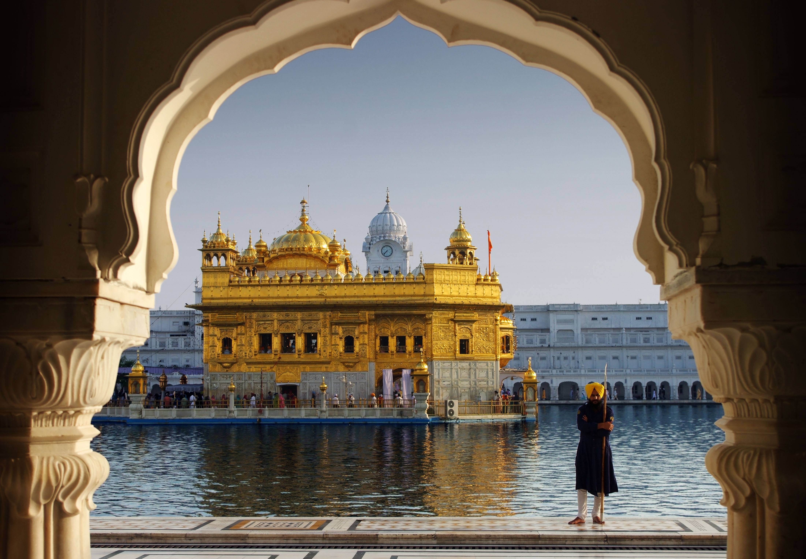

<div class="container">
  
  <div class="modal fade" id="exampleModalLong" tabindex="-1" role="dialog" aria-labelledby="exampleModalLongTitle" aria-hidden="true">
    <div class="modal-dialog" role="document">
      <div class="modal-content">
        <div class="modal-header">
          
          <h2>Golden Temple</h2>
         
          <button type="button" class="close" data-dismiss="modal" aria-label="Close">
            <span aria-hidden="true">&times;</span>
          </button>
        </div>
        <div class="modal-body">
          
          <p></p>
          
        <p><em>Keeping the faith of thousands of people alive for centuries, Golden Temple at Amritsar is one of the most revered pilgrim sites for Sikhs as well as people from other communities. The Gurudwara, originally known as Sri Harmandir Sahib or Sri Darbar Sahib, was established back in 1557 A.D which today attracts thousands of tourists every year from around the world to appreciate the architecture and find better connect with their spiritual self.

          The site was conceptualized by the fifth Nanak Guru in Sikhism and is a spectacular view with its huge surrounding water tank, lit up corridors and its golden pleating on the dome, especially at night. The site is open almost 20 hours a day for anyone and everyone where devotees come to pray or volunteer for the services. The Gurudwara also hosts 'Guru Ka Langar', free lunch prepared by the volunteers to feed thousands of visitors daily. An appealing feature about the religious site is its secular approach to all other religions reflected via its architecture and history. Interestingly, the foundation stone for this religious site of Sikhs was laid by a Muslim saint Hazrat Mian Mir Ji from Lahore. Adding to this, the entire architecture of the Gurudwara is very different from the typical one followed under Hindu Temple architecture. The structure is on the ground level (unlike the higher structure otherwise) and has four entrance/exits to the centre unlike typical one gate to suggest Sikhism's tolerance toward all other faith and religions.</em></p>
          

        </div>
        <div class="modal-footer">
          <button type="button" class="btn btn-secondary" data-dismiss="modal">Close</button>
          
        </div>
      </div>
    </div>
  </div>
</div>